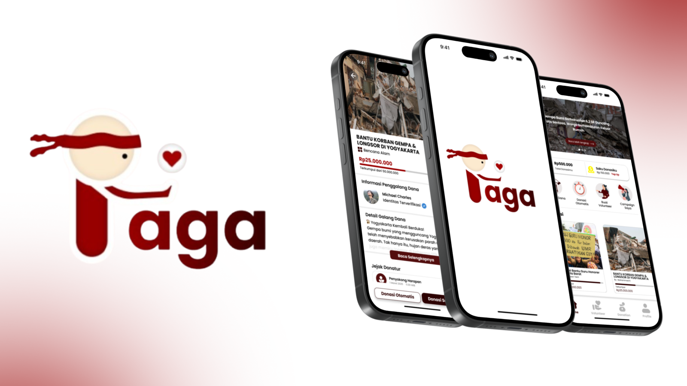
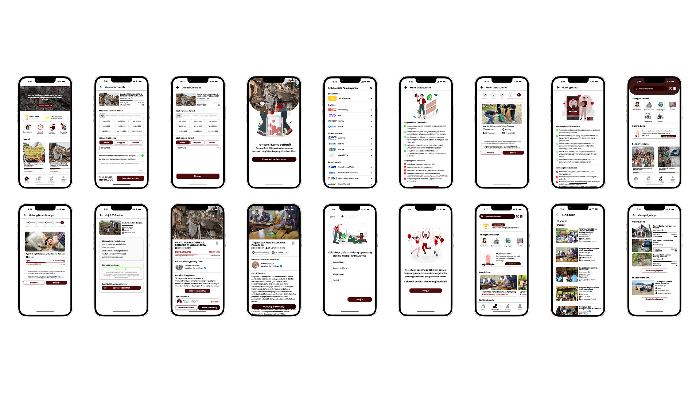

RAGA is an AI-powered volunteer platform designed to help users discover meaningful volunteer opportunities based on their interests, skills, and preferences. The platform connects users with a variety of volunteering activities, ranging from education and environmental conservation to social initiatives and disaster relief.
As a UX Researcher, I focused on understanding users' needs, motivations, and challenges when looking for volunteer opportunities. I contributed to identifying potential user problems, defining relevant use cases, and preparing interview questions to gather meaningful insights from potential users.
Through user research and discussions with participants, I helped explore how people currently discover volunteering opportunities, what factors influence their decisions, and what difficulties they experience during the process. These insights were then used to identify opportunities for improvement and support the development of a more relevant and personalized volunteering experience.
"I also collaborated with the team to translate research findings into potential solutions and ensure that the proposed features were aligned with actual user needs rather than assumptions."
The research focused on understanding the user's experience when searching for and choosing volunteer opportunities. We explored several aspects, including user motivations, preferred types of volunteering activities, decision-making factors, and challenges when finding opportunities that match their interests and abilities.
The research also aimed to understand what kind of information users need before deciding to participate in a volunteering activity, such as location, activity description, required skills, time commitment, and the impact of their contribution.
Identified potential user needs and challenges related to discovering and selecting volunteer opportunities.
Contributed to determining relevant use cases based on the problems and needs identified during the initial research.
Helped develop interview questions to explore users' experiences, motivations, preferences, and pain points.
Participated in interviews to gather insights directly from potential users and understand their expectations toward a volunteer platform.
Reviewed and analyzed findings from the research to identify recurring problems, user expectations, and potential opportunities.
Contributed to translating research insights into potential solutions and features that could provide a more personalized volunteering experience.
The research helped us understand that users may have different motivations and considerations when choosing volunteer activities. Rather than simply providing a list of available opportunities, users need recommendations that feel relevant to their interests, skills, location, and availability.
This insight became one of the considerations behind RAGA's personalized approach, where AI can help users discover volunteering opportunities that are more aligned with their individual profiles.
The research findings were used as a foundation for developing and refining the RAGA prototype. The prototype demonstrates how users can discover volunteer opportunities and receive recommendations based on their personal interests and skills.
